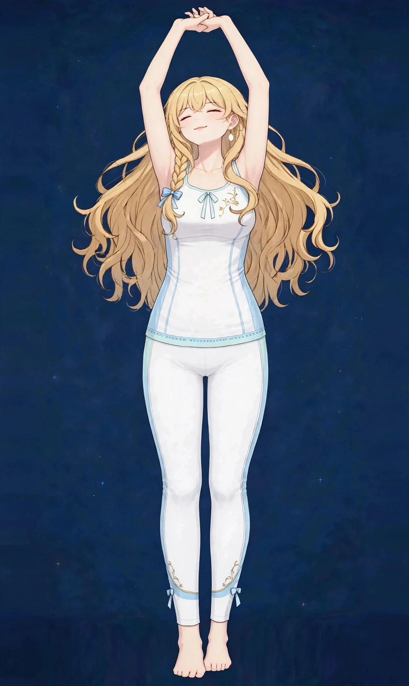

梅田で体のだるさケア｜なんとなく重い日の東洋医学ボディケア巡り
「病気ではないと思うけれど、なんだか体が重い」。季節の変わり目や忙しい時期のあとに、こうした漠然としただるさを感じる方は多くいらっしゃいます。長く続く場合や、他の症状を伴う場合は医療機関への受診をおすすめします。
体のだるさはどんな状態か
体のだるさは、特定の部位の痛みではなく、「なんとなく重い」「やる気が出ない」「休んでもすっきりしない」という漠然とした感覚を表す言葉です。季節の変わり目や、忙しい時期を乗り切ったあとに表れやすく、検査で異常が見つからないことも多いため、「気のせい」と片づけられがちなお悩みです。
東洋医学では、こうした「病気とまでは言えない不調の手前」の状態を大切に扱ってきました。だるさは、生活のリズムや巡りのバランスが崩れかけているサインと捉えられます。ただし、長く続く場合や他の症状を伴う場合は別の背景も考えられるため、受診の目安もあわせてご確認ください。
こんなサインはありませんか？ — 体のだるさのチェックリスト
- 病気ではないと思うが体が重い
- 季節の変わり目に調子が落ちる
- やる気が出ない日が増えた
- 休んでもすっきりしない
- 朝から体が重く、動き出すまでに時間がかかる
- 食後に強い眠気やだるさが出やすい
- 天候や季節でだるさの強さが変わる
- 肩や腰のだるさも一緒に感じることが多い
当てはまる項目が多いほど、負担がたまりやすい生活が続いている可能性があります。次の「要因」と見比べて、どこに負担が集まっているか確かめてみてください。
体のだるさにつながりやすい要因
- 生活リズムの乱れ：就寝・起床の時刻がばらつくと、体の一日のリズムが整いにくくなり、だるさが抜けにくくなります。休日の寝だめも、リズムをずらす一因になります。
- 季節の変わり目と湿気：気温や湿度の変化が大きい時期は、体が環境への調整に力を使いやすく、理由のはっきりしない重さを感じる方が増えます。梅雨時期に多いのもこのパターンです。
- 回復の追いつかない忙しさ：忙しい時期そのものより、そのあとも休む間もなく日常が続くことで、だるさが固定しやすくなります。山場のあとにこそ表れるタイプです。
- 消化への負担：食事の時間が不規則、夜遅い食事、冷たいものの摂りすぎなどは、お腹まわりの負担となり、全身の重さとして表れやすくなります。
- 緊張の継続：気が張った状態が続くと、体は休んでいる時間も緊張が抜けきらず、回復が浅くなります。肩や背中の張りと一緒に感じる方が多い背景です。
- 運動不足：動く機会が減ると巡りが滞り、体が重く感じやすくなります。反対に、だるい日は動きたくなくなるため、悪循環になりやすい点にも注意が必要です。
図1｜だるさと関係しやすい体の部位

東洋医学から見た考え方
東洋医学の「未病」の考え方が、まさにこのような状態に向けられています。気・血・水の巡りのバランスが崩れかけているサインと捉え、施術では全身の巡りを意識しながら、その日の状態に合わせて調整します。
だるさの見立てでは、呼吸に関わる肺経、消化吸収に関わる胃経と脾経、体の土台に関わる腎経、体の中心を通る任脈などを横断して考えます。施術では一つの部位に絞らず、全身の巡りを意識しながら、その日の状態に合わせて配分を調整します。
代表的なツボ
だるさのケアでよく挙げられるツボを紹介します。お腹のツボは手のひらで温めるケアが向いています。食後すぐの強い圧は避けてください。
図2｜だるさのケアで挙げられるツボの位置
おすすめ施術
美容整体
姿勢や体の使い方のクセもだるさの背景になるため、整体で体のバランスを見ながらほぐします。オイルマッサージとの組み合わせもご相談いただけます。
進め方は、まず全身を広くほぐして巡りを意識し、その日の状態に合わせて、張りの強い部位やお腹まわりなどに時間を配分していく流れです。だるさの日は体が重く感じやすいため、圧は強い刺激より、一定のリズムでゆったり進めることを大切にしています。
美容整体では姿勢や体の使い方のクセも一緒に確認します。姿勢の崩れがだるさの背景にある場合は、ほぐすだけでなく、体のバランスを見る視点も加えて組み立てます。オイルマッサージとの組み合わせもご相談いただけます。
自宅でできるセルフケア
だるさのセルフケアは、生活リズムを少しずつ整えることが中心です。全部を一度に変えようとせず、取り入れやすいものから始めてみてください。
- 1．朝の光と背伸び起きたらカーテンを開けて光を浴び、軽く背伸びをします。一日のリズムの起点を作る習慣で、午前中の重さの感じ方が変わってきます。
- 2．お腹を温める気海や中脘のあたりに手のひらを当てて温める、温かい飲み物を選ぶなど、お腹まわりを冷やさない工夫を。冷たいものが続いた日ほど意識してみてください。
- 3．短い散歩を挟むだるい日ほど、5〜10分の短い散歩が巡りの切り替えになります。激しい運動ではなく、呼吸が少し深くなる程度の歩行が目安です。
- 4．起床時刻をそろえる休日も起床時刻を大きくずらさないことで、週明けのだるさが軽くなりやすくなります。就寝時刻を早める調整から始めるのがおすすめです。
図3｜セルフケア「朝の背伸び」の手順

場面別の注意
季節の変わり目
気温差の大きい時期は、服装でこまめに調整し、湯船で温まる日を増やしてください。だるさが出やすい時期だと先に知っておくだけでも、予定の立て方が変わります。
忙しい時期のあと
山場を越えたら、回復のための余白を予定に入れてください。だるさは遅れて表れることがあるため、無理に予定を詰めた週末より、休む週末が支えになります。
食生活が乱れた時期
夜遅い食事や冷たいものが続いたら、お腹を温めるケアと、温かい食事のリズムを数日意識してみてください。お腹の負担は全身の重さとして表れやすくなります。
受診の目安
次のような場合は、サロンでのケアの前に医療機関への受診をおすすめします。
- だるさが数週間以上続き、日常生活に支障が出ている
- 発熱、体重の急な増減、むくみの悪化などを伴っている
- 気分の落ち込みが強く、長く続いている
- 息切れや動悸を伴うようになった
- 休んでも悪化していく感じがある
当店は医療機関ではなく、診断は行いません。迷うときは、まずかかりつけの医療機関にご相談ください。
よくある質問
Q．だるいだけでも相談してよいですか？
はい。「なんとなく重い」という段階は、サロンでご相談いただくことの多い状態です。ただし、長く続く場合や他の症状を伴う場合は、先に医療機関への受診もご検討ください。
Q．美容整体とオイルマッサージ、どちらが合いますか？
姿勢のクセも気になる方は美容整体、全身をゆったりほぐしたい方はオイルマッサージが向いています。当日の状態をうかがい、組み合わせのご提案もできます。
Q．施術のあと、だるさが強くなることはありますか？
施術後に一時的に体が重く感じる方もいます。当日は水分をとり、湯船で温まって早めに休むのがおすすめです。数日たっても続く場合は医療機関にご相談ください。
Q．季節でだるさが変わります。時期に合わせた通い方はできますか？
はい。季節の変わり目だけ集中的に使う方もいらっしゃいます。ご自身のだるさのパターンを教えていただければ、時期に合わせたペースの目安も一緒に考えられます。
関連するお悩みページ
関連する経絡ページ
ご予約
ステラポラリス（大阪・梅田／女性専用）｜オイルマッサージ 90分 10,000円｜月〜土 17:00〜22:00・完全予約制
ご予約はLINE公式アカウントで受け付けています。希望の日時と、気になる場所を送ってください。